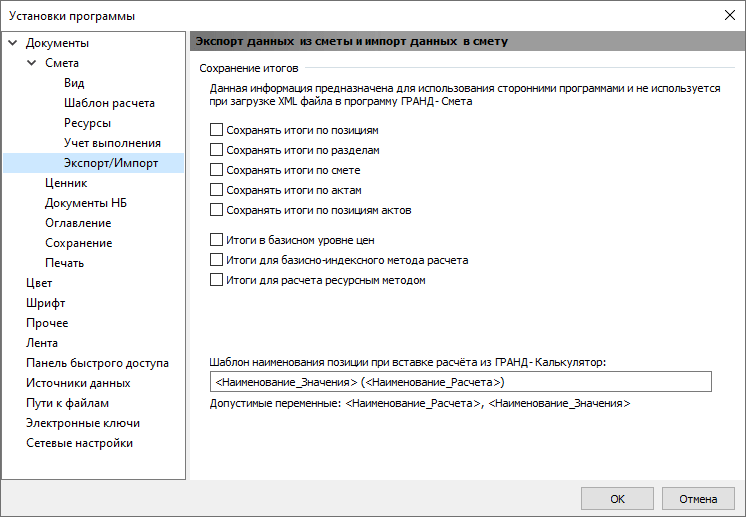

Парсер извлекает информацию о том, какие настройки в программе ГРАНД-Смета были сделаны, когда сохранялся файл. Путь к настройке вкладка «Файл» → «Установки» → «Экспорт/Импорт» (Экспорт данных из сметы и импорт данных в смету).

| Столбец | Описание |
|---|---|
| ИтПоз | Сохранять итоги по позициям: ▣/□ |
| ИтРазд | Сохранять итоги по разделам: ▣/□ |
| ИтСмет | Сохранять итоги по смете: ▣/□ |
| ИтАкт | Сохранять итоги по актам: ▣/□ или Нет акта |
| ИтПозАкт | Сохранять итоги по позициям актов: ▣/□ или Нет акта |
| ИтБЦ | Итоги в базисном уровне цен: ▣/□ |
| ИтБИМ | Итоги для базисно-индексного метода расчета: ▣/□ |
| ИтРМ | Итоги для расчета ресурсным методом: ▣/□ |
Всего столбцов: 8